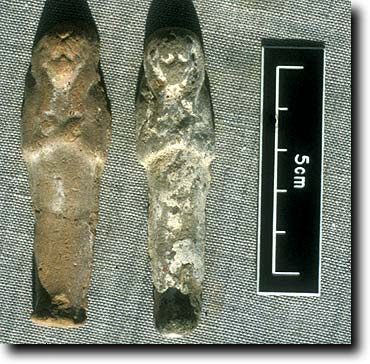
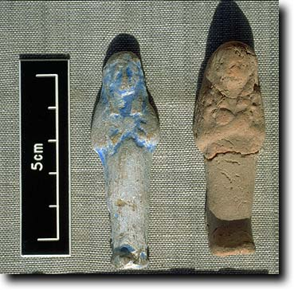
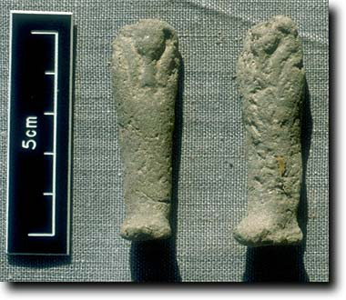
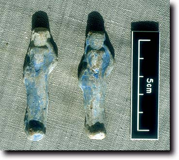

- Home
- Finds home
- Finds by date
- Finds by type
- Conservation
- Slideshow
- Site general
Small uninscribed shabtis
Shabtis (or ushabtis) are a very common feature of Egyptian burials from the New Kingdom onwards. They tended to be put individually or in very low numbers into burials in the 18th dynasty, but in the 19th dynasty we start to see the number of them in burials increasing. Eventually the standard number became 401, one shabti for each day of the year and 1 overseer for every 10 ordinary ones (Egyptian bureaucracy extended into death). The function of the shabti is complex and changed over time. The most commonly found explanation is that the shabtis were supposed to do manual work in the next life which the dead man was supposed to be called on to do, things like carrying sand. Better examples bear a text about this, the so-called 'shabti spell'. If you look in any museum or publication you will find some shabtis. They tend to be nice examples, usually bearing the name of the owner. Examples found in TT99 tend not to be inscribed, but are rather small and quite poorly made; they are sometimes (jokingly) called 'jelly babies' by Egyptologists! It seems that as the Third Intermediate Period advanced and more and more shabtis were being made for people, that mass production resulted in these sets of nameless objects being buried with people of reasonable status, and that the best examples were reserved for the top people and the kings. A large number of these objects was found, and a considerable range of types. Each type has been given a type number to help us keep track of them. |
|
|  |  |
Probably the same shabti mould used for fired clay (left) and unfired mud (right). Type 7 |
Uninscribed shabtis of fired clay; that on the left is painted blue to imitate faience. Types 35 and 59 |
|  |  |
|
Uninscribed shabtis of unfired mud. Type 6 |
Uninscribed shabtis of fired clay, painted blue. These are particularly interesting as they carry a basket, whereas it is normal to depict the basket on the back. Type 9 |
Gillian Pyke has discovered that the shabtis carrying baskets have parallels in the tombs of queens of the 25th dynasty at el-Kurru in Nubia. These queens seem to date to the reigns of Shabaka and Shabataka/Shebitku; thus the date fits in well with other material from the tomb, and also suggests a possible link with Nubia, as this type has been found nowhere else. For inscribed shabtis from the tomb click here. |
|
© Nigel Strudwick 1997-2016